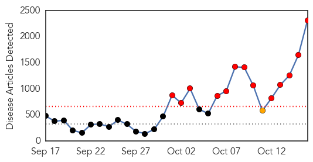
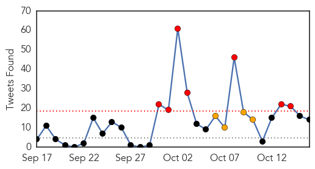
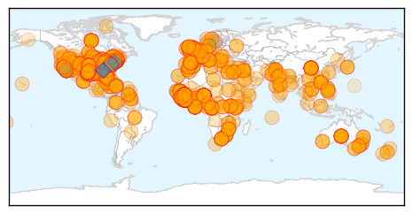
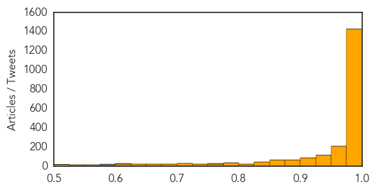

Ebola
30-Day Web Trend
13 alerts, 1 warnings

30-Day Twitter Trend
7 alerts, 4 warnings

Article Locations
Article Confidences
Top Articles:
- 1.000
- #FactsNotFear
- 1.000
- WTOC-TV: Savannah, Beaufort, SC, News, Weather & Sports
- 1.000
- Ebola nurse moved to National Institutes of Health
- 1.000
- Nurse with Ebola moved to special isolation unit in MD
- 1.000
- 'We Made Mistakes' in Ebola Case
- 1.000
- As Ebola fears grow, crisis in West Africa ‘deteriorating’
- 1.000
- Latest Ebola News: WHO devices a plan to prevent the spread of Ebola in Pakistan
- 1.000
- Ebola crisis update: US officials defend Ebola response; House panel convenes
- 1.000
- US Ebola patient moved to Maryland facility
- 1.000
- Person on Ebola patient flight OK in Reno
- 1.000
- What you should know about Ebola virus
- 1.000
- As Ebola fears grow, crisis in West Africa ‘deteriorating’
- 1.000
- CHLA pediatric specialist discusses how parents can help children prevent Ebola outbreak
- 1.000
- Lawmakers: Gov't Credibility Waning on Ebola
- 1.000
- CDC Confirms Negative Ebola Results for Yale Student
- 1.000
- CDC Confirms Negative Ebola Results for Yale Student
- 1.000
- WHO Reveals New Ebola Deaths Toll
- 1.000
- Second Health Care Worker in Dallas Tests Positive for Ebola
- 1.000
- CDC Monitoring 76 Hospital Workers in Dallas for Ebola Exposure
- 1.000
- Perspective urged as Lower Hudson Valley fear factor grows
- 1.000
- Causes, Symptoms & Treatment
- 1.000
- Nurse with Ebola moved to special isolation unit in MD
- 1.000
- #FactsNotFear
- 1.000
- Spokane, North Idaho News & Weather KHQ.com
- 1.000
- Plane passenger fearing Ebola outbreak wears full virus protective suit and mask at US airport
- 1.000
- Worst Ebola outbreak on record tests global response
- 1.000
- Nurse moved to Maryland; Ebola fears spread
- 1.000
- Dallas Ebola patient Amber Vinson 'cleared to fly' by CDC after reporting a temperature
- 1.000
- Ebola crisis: Nurses 'without proper protective gear', patients allowed to fly and 'insufficient training': does the West know what it's doing?
- 1.000
- Obama names former Biden aide Ron Klain as 'Ebola czar'
- 1.000
- Nurse with Ebola moved to special isolation unit in MD
- 1.000
- Dan Liljenquist: Ebola virus has launched humanity into uncharted waters
- 1.000
- Plane passenger fearing Ebola outbreak wears full virus protective suit and mask at US airport
- 1.000
- Researcher pitches in to develop Ebola vaccine
- 1.000
- Maryland, Anne Arundel County caregivers seek more training, protection for Ebola virus
- 1.000
- The Boxer Show on Buckeye Country 105.5
- 1.000
- Hospital Official 'Sorry For Mistakes'
- 1.000
- Ebola crisis: Hospital official 'sorry for mistakes'
- 1.000
- Ebola crisis: WHO says major outbreak in West 'unlikely'
- 1.000
- AZ hospitals, health-care workers prepare for Ebola
- 1.000
- Nurse with Ebola moved to special isolation unit in MD
- 1.000
- Latest news about Ebola
- 1.000
- Local hospitals prepare for Ebola virus
- 1.000
- Vietnam to set up mobile anti-epidemic teams to prevent Ebola
- 1.000
- Chronology: Worst Ebola outbreak on record tests global response
- 1.000
- Local medical facilities amp up Ebola preparedness training
- 1.000
- Diagnosis and cure: All you need to know about Ebola virus outbreak
- 1.000
- Ebola Transmission Facts Breed Discord for CDC WHO and White House [Video]
- 1.000
- No Ebola epidemic in US without 'mutation:' CDC
- 1.000
- Worst Ebola outbreak on record tests global response
Showing top 50 articles...
Top Tweets:
- 0.991
- - The outbreak in West Africa is the Ebola-Zaire strain. This article references Ebola-Reston. Different strains.
- 0.980
- Only if you have direct contact w/ objects contaminated with the Ebola virus. The virus from infected secretions would (1/2)
- 0.774
- Ebola virus is spread through direct contact with the blood or bodily fluids of a person who is sick with Ebola. http://t.co/YcPFYjXO2a
- 0.774
- Ebola virus is spread through direct contact with the blood or bodily fluids of a person who is sick with Ebola. http://t.co/KApMgs2Xa0
- 0.757
- RT: We're in! Modeling the Impact of Interventions on an Epidemic of Ebola in Sierra Leone and Liberia http://t…
- 0.722
- Breaking via Jamaica imposes travel ban on people who have transited Ebola-affected countries in Africa.
- 0.683
- Nurse with Ebola virus to be moved out of Dallas Follow for updates http://t.co/k3MtsqaVSj
- 0.649
- RT: The EU's response to help fight the Ebola outbreak in West Africa http://t.co/W9kzloT0LR
- 0.631
- Modeling the Impact of Interventions on an Epidemic of Ebola in Sierra Leone and Liberia http://t.co/c3ZB8VJ0jV
- 0.623
- Ebola crisis numbers Oct 15 2014 endebolanow ebola sierraleone liberia guinea senegal nigeria us spain http://t.co/f6VyCeS78m
- 0.621
- In Sierra Leone there are 346 available beds for the 1300 people infected w/ Ebola in the last three weeks. @WHO http://t.co/JsufBIh4nF
- 0.590
- Koinadugu district in Sierra Leone had managed to stay free from Ebola until this week; it now has several cases. http://t.co/OzgF8ozATY
- 0.544
- By Jan. Sierra Leone to have 149 isolation centers (CCUs) but only 18 Ebola treatment centers. Major shift. @WHO http://t.co/JsufBIh4nF
- 0.523
- RT: Infographic: The problem with Ebola Preparedness. http://t.co/gsFxQ6uAU8 Ebola EbolaChat
MERS
30-Day Web Trend
0 alerts, 0 warnings

30-Day Twitter Trend
3 alerts, 0 warnings

Article Locations

Article Confidences

Top Articles:
Top Tweets:
-
No tweets found for Oct 16, 2014